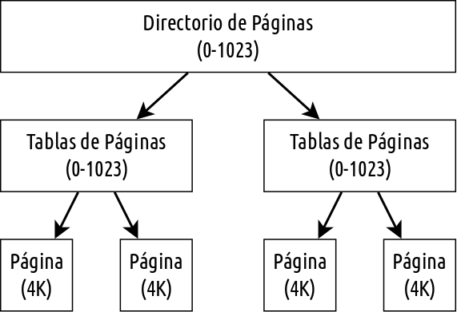

Sistemas Operativos
de Propósito General
Emmanuel Beneventano
Santiago Rojo
Hernán Ruiz
Fernando Scorpiniti
Temario
- Introducción
- Arranque
- Estructura del sistema
- Administación de procesos
- Administación de memoria
- Sistema de archivos
- Seguridad
Introducción
Introducción
- Sistemas operativos analizados
Arranque
Arranque

/ Arranque / Linux $
- Fase 1 : Hardware
- Fase 2 : BootLoader
- Carga kernel en memoria
- Ubicacion
- Fase 3 : Kernel
- Fase 4 : Init
:\ Arranque \ Windows >
- BIOS
- Cargador de arranque
- NTLDR
- HAL
- Kernel
- Proceso del sistema (Modo Kernel)
- SMSS
- Tareas adicionales de inicialización
- WINLOGON
- CSRSS (API Win32)
- Registro de sistema
Estructura del sistema
Estructura del sistema
| Linux |
Windows |
| Utilidades del sistema |
Executive |
| Bibliotecas del sistema |
Kernel |
| Kernel |
HAL |
/ Estructura del sistema / Linux $

Principios de diseño$
- Multitarea
- MultiUsuario
- Estructura monolitica
- Sistema de archivos basado en UNIX
Modulos del Kernel$
- Gestion de modulos
- Registro de controladores
- Mecanismo de resolucion de conflictos
:\ Estructura del sistema \ Windows >

Administración de procesos
/ Administración de procesos / Linux $
- Gestión
- Procesos y Hebras
- Planificación
- Sincronización
- Comunicación interprocesos
- Multiprocesamiento
/ Adm. de Procesos / Linux / Gestión $
- Modelo de procesos
fork() y exec()
- Contexto del proceso
- Identidad del proceso
- Entorno
- Contexto
/ Adm. de Procesos / Linux / Gestión $
- Identidad del proceso
- Id: Especifíca al sistema acerca de los procesos cuando una aplicación realiza una llamada.
- Credenciales: Determina los derechos de un proceso para acceder a archivos o a recursos.
- Personalidad: Puede modificar la semantica de ciertas llamadas al sistema.
- Entorno
- Se hereda del proceso padre
- Compuesto por dos vectores
- Vector de argumentos
- Vector de entornos
/ Adm. de Procesos / Linux / Gestión $
- Contexto: Es el estado del programa en ejecución
- Contexto de planificación
- Contabilidad de recursos
- Tabla de archivos
- Contexto del sistema de archivos
- Tabla de rutina de tratamiento de señales
- Contexto de memoria virtual
/ Adm. de Procesos / Linux / Procesos y Hebras $
/ Adm. de Procesos / Linux / Planificación $
Linux utiliza dos algoritmos de planificación:
- Algoritmo de tiempo compartido: utilizado para planificar de manera equitativa multiples procesos.
- Algoritmo para tareas en tiempo real: las prioridades son mas importantes que la equidad.
/ Adm. de Procesos / Linux / Planificación $
El kernel de Linux utiliza las llamadas "Colas de ejecución" para mantener una lista de todas las tareas.
- Matriz de tareas activas.
- Matriz de tareas caducadas.
/ Adm. de Procesos / Linux / Planificación $
Linux implementa dos clases de planificación en tiempo real
- FCFS (First Come, First Served).
- Planificación por turnos.
/ Adm. de Procesos / Linux / Sincronización del Kernel $
Una solicitud para ejecución en modo Kernel se produce si:
- Un programa en ejecución pide un servicio del Sistema Operativo.
- Un controlador de dispositivo genera una interrupción y el kernel comience a ejecutar una rutina de tratamiento de la misma.
/ Adm. de Procesos / Linux / Sincronización del Kernel $
Bloqueos monoprocesador y multiprocesador en Linux.
- Sistema de activación del mecanismo de apropiación del kernel.
- Cerrojos de bucle sin fin.
Otra técnica para tratar interrupciones: Hardware de control de interrupciones.
Se separa a las rutinas de servicio de interrupciones en dos secciones:
- La mitad superior.
- La mitad inferior.
/ Adm. de Procesos / Linux / Multiprocesamiento $
El multiprocesamiento simétrico de Linux permite que una serie de procesos separados, se ejecuten en diferentes procesadores.
- Se creó un único cerrojo de bucle sin fin del kernel para permitir que estuvieran activos concurrentemente en el kernel múltiples procesos.
/ Adm. de Procesos / Linux / Comunicación interprocesos $
Sincronización
Implica que un proceso sepa que se ha producido un suceso o que se transfiera datos de un proceso a otro.
- Linux utiliza colas de espera y estados de planificación.
- También implementa el mecanismo de semaforos de Unix.
/ Adm. de Procesos / Linux / Comunicación interprocesos $
Transferencia de datos entre procesos
- Mecanismo "Pipe": Permite que un procesos hijo herede el canal de comunicación del padre.
- Mecanismo de memoria compartida: Los datos escritos por un proceso en una región de memoria compartida pueden ser leidos por cuaquier otro proceso que haya mapeado dicha región en su espacio de direcciones.
:\ Administración de procesos \ Windows >
- Hebras y planificación
- Gestor de procesos
- Comunicación interprocesos
- Sincronización
:\ Adm. de procesos \ Windows \ Hebras y planificación
Una hebra es una unidad ejecutable.
Cada proceso tiene una o más hebras.
- Hebra
- Prioridad real
- Afinidad de procesador
- Información de utilización de CPU
:\ Adm. de procesos \ Windows \ Hebras y planificación
Estados de las hebras.
- Preparada
- Lista
- Ejecución
- Espera
- Transición
- Terminada
:\ Adm. de procesos \ Windows \ Hebras y planificación
Esquema de prioridades.
- Clase variable (0 - 15)
- Clase de tiempo real (16 - 32)
Para su ejecución se buscan las hebras de mayor prioridad y si no hay hebras disponibles se ejecuta una hebra especial denominado hebra de inactividad.
Si una hebra de tiempo real de mayor prioridad, pasa a estado preparada, mientras otra de menor prioridad esta en ejecución, esta ultima será desalojada del CPU.
:\ Adm. de procesos \ Windows \ Gestor de procesos >
Proporciona servicios para
- Crear Procesos
- Borrar Procesos
- Utilizar Utilizar
:\ Adm. de procesos \ Windows \ Comunicación interprocesos >
Windows proporciona tres formas de compartir objetos entre procesos.
- Un proceso hijo hereda un descriptor del objeto
Comunicación a través de los procesos compartidos.
- Un proceso crea un objeto con nombre y el segundo proceso lo abre utilizando dicho nombre
El espacio de nombres es global.
- Duplicando un descriptor
Requiere de un mecanismo que permita compartir el descriptor duplicado.
:\ Adm. de procesos \ Windows \ Comunicación interprocesos >
Pasaje de mensajes.
- Asíncronas
PostMessage()PostThreadMessage()
- Síncronas
SendMessage()SendThreadMessage()SendMessageCallback()
:\ Adm. de procesos \ Windows \ Comunicación interprocesos >
Dentro de los mensajes se pueden copiar datos.
Toda hebra de la API Win32 tiene su propia cola de mensajes.
Si una aplicación no invoca GetMessage() y la cola se llena, pasados 5 segundos el sistema marca la aplicación como "No responde".
:\ Adm. de procesos \ Windows \ Sincronización >
El kernel proporciona objetos de sincronización, como semáforos y objetos mutex.
La API Win32 provee métodos para el trabajo con sección critica.
InitializeCriticalSection()EnterCriticalSection()LeaveCriticalSection()
Administración de memoria
/ Administración de memoria / Linux $
- Memoria física
- Memoria virtual
- Intercambio y Paginación
:\ Administración de memoria \ Windows >
- Memoria virtual
- Working Set
- Intercambio y Paginación
:\ Administración de memoria \ Windows >

Sistemas de archivos
/ Sistema de archivos / Linux $
:\ Sistema de archivos \ Windows >
NTFS
La unidad fundamental es el volumen y esta basado en una partición de un disco lógico.
Un cluster es un conjunto de sectores de un disco y es la unidad de asignación del disco.
| cluster |
Volumen |
| Tamaño del sector |
< 512 MB |
| 1 KB |
1 GB |
| 2 KB |
2 GB |
| 4 KB |
> 2 GB |
:\ Sistema de archivos \ Windows >
El tamaño pequeño de los cluster en NTSF disminuye la fragmentación interna causada en FAT16 por clusters de 32 KB.
El sistema utiliza números lógicos de cluster (LCN) como direcciones de disco.
Los archivos en NTFS no son simples flujos de bytes, sino objetos estructurados compuestos de atributos con tipo.
Todas las actualizaciones de las estructuras de datos del sistema de archivos se realizan dentro de transacciones.
:\ Sistema de archivos \ Windows >
Gestión de volumenes
- Conjunto de volumenes
Permite concatenar hasta 32 particiones físicas, para conseguir volumenes de mayor tamaño.
- Conjunto de distribución en bandas
Consiste en entrelazar sus bloques por turnos. RAID 0
- Conjunto de distribución en bandas con paridad
Conocido como RAID 5
- Espejo de disco
Dos particiones de igual tamaño situadas en discos distintos. RAID 1
:\ Sistema de archivos \ Windows >
NTFS cuenta con las siguientes caracteristicas
- Compresión
- Cifrado
- Puntos de montage
- Diario de cambios
- Copias ocultas de volúmenes
Seguridad
/ Inicio de sesión / Linux $
- Contrul de acceso
- Autenticación
:\ Inicio de sesión \ Windows >
- WINLOGON
- LSASS
- Testigos de acceso
- Privilegios/Límites
- Pulíticas de seguridad
- Monitor de referencia de seguridad